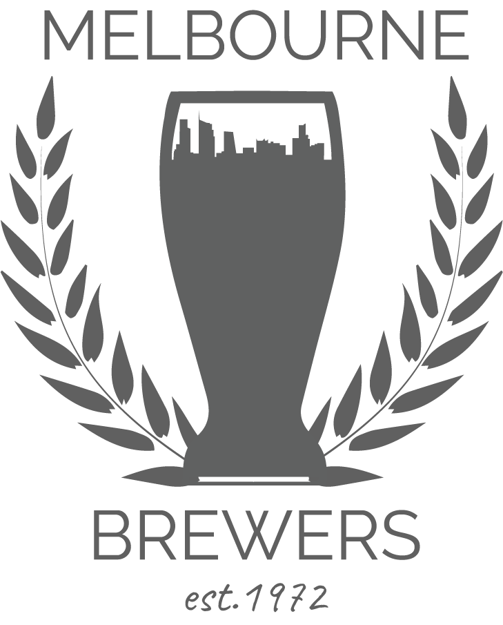
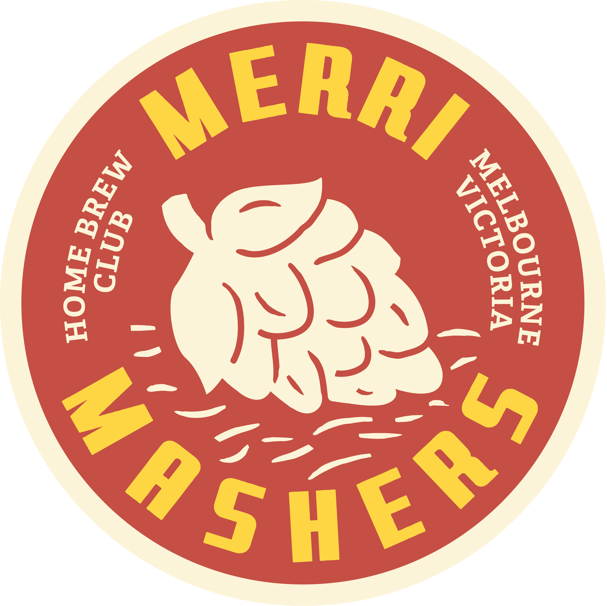
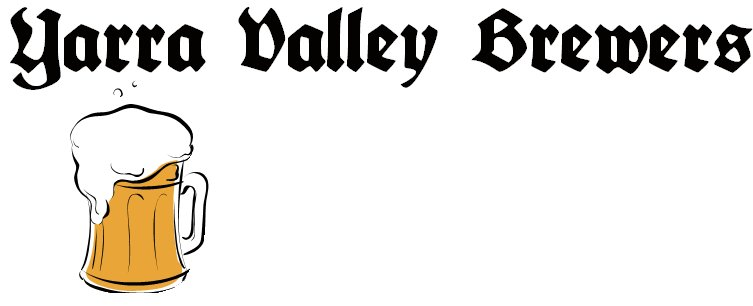
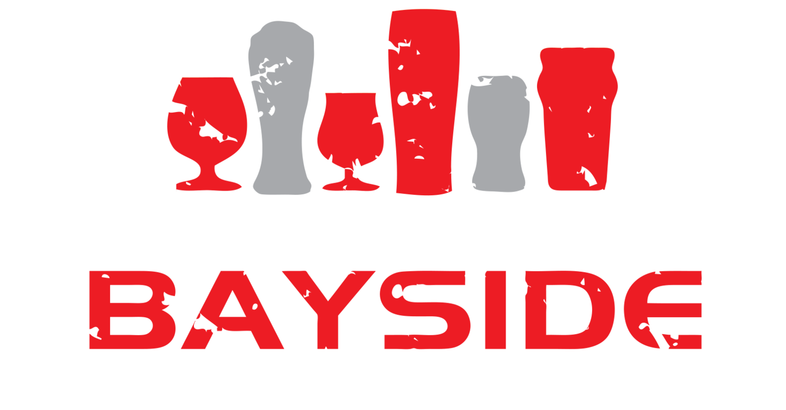
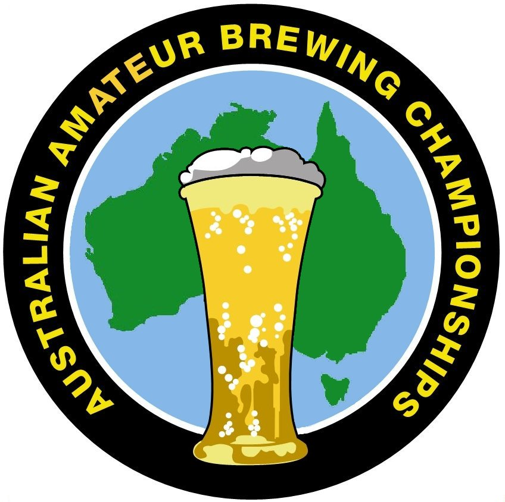

Victoria Homebrew competitions Calendar
Victoria’s homebrew clubs organize a range of competitions that cater to brewers of all levels. These competitions feature a range of styles ensuring there's a platform for every brewer's creativity. Judged by fellow brewers and certified beer judges, these events provide valuable feedback to participants while celebrating the diversity of homebrewing. The dates of these comps can vary so please check the clubs sites for details.
Beerfest

- When: Late February
- Styles: Varies
- Info: Hosted by the Melbourne Brewers, Beerfest hosts a range of styles.
IPA Comp

- When: Late March
- Styles: IPA
- Info: The Merri Mashers Comp includes every IPA style imaginable.
Belgian Comp

- When: April
- Styles: Belgian
- Info: From Belgian Pale to Belgian Tripels. Yarra Valley brewers have it covered.
Stout Extravaganza
- When: July
- Styles: Stouts and Porters
- Info: Westgate Brewers host a comp for all of your Stouts and Porters.
Oktoberfest

- When: October
- Styles: German Beers
- Info: Lagers, Bocks, and Wheat. Enter your german beers in Bayside's Oktoberfest
Vicbrew
- When: Mid September
- Styles: All BJCP styles
- Info The largest homebrew competition in Victoria. Place getters can enter their beers into the AABC
Australian Amateur Brewing Championships

- When: October
- Styles: All BJCP styles
- Info Placegetters (1st, 2nd and 3rd) in Vicbrew can enter their beers in the AABC